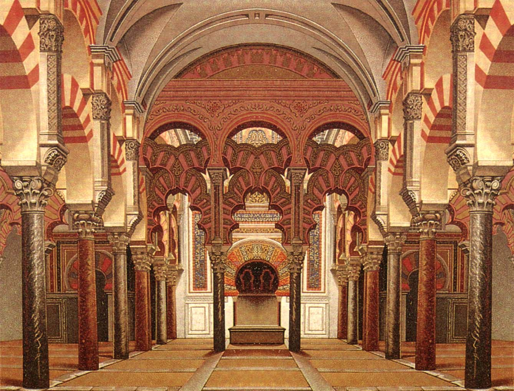

<!DOCTYPE html>
<html lang="es"></html>
<head>
    <meta charset="utf-8">
    <meta http-equiv="X-UA-Compatible" content="IE=edge,chrome=1">
    <meta name="viewport" content="width=device-width">
    <meta name="description" content="Córdoba ciudad patrimonio">
	<meta name="keywords" content="Turismo, patrimonio, viajes">
	<link rel="shortcut icon" href="../../../images/icono.jpg" type="images/jpg">
    <link rel="stylesheet" href="./css/style.css">
    <title>Turismo Córdoba</title>
</head>
    
<body>
<div class="container">
    <div class="grid-1">
        <header>
            <h1>Córdoba | Ciudad Patrimonio</h1>
        </header>
    </div>
    <div class="grid-2">
        <nav>
            <ul>
                <li class="me">
                    <div class="barra"></div>
                    <p class="menu"><a class="x" href="../../index.html">Inicio</a></p>
                </li>
                <li class="me">
                    <div class="barra"></div>
                    <p class="menu"><a class="x" href="../../monumentos/medinaazahara/index.html">Medina Azahara</a></p>
                </li>
                <li class="me">
                    <div class="barra"></div>
                    <p class="menu"><a class="x" href="../../monumentos/cascohistorico/index.html">Casco histórico</a></p>
                </li>
                <li class="me">
                    <div class="barra"></div>
                    <p class="menu"><a class="x" href="../../monumentos/patios/index.html">Los Patios</a></p>
                </li>
                <li class="me">
                    <div class="barra"></div>
                    <p class="menu"><a class="x" href="../../monumentos/contacto/index.html">Contacto</a></p>
                </li>
            </ul>
        </nav>
    </div>
    <div class="grid-3">
        <main>
          <section>
            <article>
              <h2>La Mezquita</h2>
              
              <h3>Historia de La Mezquita</h3>
              <p class="caja1">
              Mezquita-catedral de Córdoba,1​2​ antes «Santa María Madre de Dios» o «Gran Mezquita de Córdoba», actualmente conocida como la Catedral de la Asunción de Nuestra Señora de forma eclesiástica, es un edificio de la ciudad de Córdoba, España.
      
              Se empezó a construir como mezquita en el año 786, con la apropiación por los conquistadores musulmanes de la basílica hispanorromana de San Vicente Mártir y la reutilización de parte de los materiales, quedando reservada al culto musulmán.3​ El edificio resultante fue objeto de ampliaciones durante el Emirato de Córdoba y el Califato de Córdoba. Con 23 400 metros cuadrados, fue la segunda mezquita más grande del mundo en superficie, por detrás de la Mezquita de La Meca, siendo sólo alcanzada posteriormente por la Mezquita Azul (Estambul, 1588). Una de sus principales características es que su muro de la qibla no fue orientado hacia La Meca, sino 51º grados más hacia el sur, algo habitual en las mezquitas de al-Ándalus.
      
              En 1238, tras la Reconquista cristiana de la ciudad, se llevó a cabo su consagración como catedral de la diócesis con la Ordenación episcopal de su primer obispo, Lope de Fitero.4​ El edificio alberga el cabildo catedralicio de la Diócesis de Córdoba, y por su carácter de templo católico y sede episcopal, está reservado al culto católico. En 1523, bajo la dirección de los arquitectos Hernán Ruiz, el Viejo y su hijo, se construyó su basílica cruciforme renacentista de estilo plateresco.
      
              Hoy todo el conjunto constituye el monumento más importante de Córdoba, y también de toda la arquitectura andalusí, junto con la Alhambra, así como el más emblemático del arte omeya hispanomusulmán. Declarada como Bien de interés cultural2​ y Patrimonio Cultural de la Humanidad como parte del centro histórico de la ciudad,5​ se incluyó por el público entre los 12 Tesoros de España en 20076​ y fue premiada como el mejor sitio de interés turístico de Europa y sexto del mundo según un concurso de TripAdvisor.7​ En 2018 rozó los dos millones de visitantes, siendo su récord histórico y convirtiéndolo en uno de los monumentos más visitados de España.8​
              </p>
            
            </article>
            <article>
              <h3>Descripción de la Mezquita</h3>
              <p class="caja2">
              Se accede por la Puerta del Perdón (lado norte), de estilo mudéjar (1477), donde se observan las hileras de naranjos y palmeras, y las fuentes y los arcos de herradura que lo rodean. Junto a la puerta se levanta la mezquita que se compone de tres partes: "El Patio de los Naranjos", que en tiempos del Califato era el "Patio de las Abluciones" (conserva buena parte de su aspecto original), el alminar desmochado parcialmente y rodeado, a principios del siglo XVII, de un «encofrado» de estilo herreriano.
      
              La puerta de Las Palmas da acceso a la mezquita: hay un bosque de 1.300 columnas de mármol, jaspe y granito sobre las que se apoyan trescientos sesenta y cinco arcos de herradura bicolores. El mihrab es un joyel de mármol, estuco y mosaicos bizantinos brillantemente coloreados sobre fondo de oro y bronce, además de cobre y plata.
      
              En el lucernario se conservan los arcos lobulados de los muros y la cúpula. En la cabecera destacan los arcos, los mosaicos del muro y la estructura y decoración de las cúpulas a base de arcos cruzados.
      
              Tras la conquista de Córdoba por los cristianos, éstos utilizaron la mezquita para celebrar su culto, pero en el siglo XVI, cuando el islam fue definitivamente expulsado de la península Ibérica, los vencedores quisieron adecuarla a sus creencias: construyeron una catedral renacentista en sus naves centrales, a cargo de Hernán Ruiz, llamado "el viejo", y luego, de su hijo, en pleno corazón de la mezquita, alterando la perspectiva original.
      
              De la antigua iglesia cristiana, destruida para construir en su solar la mezquita, apenas quedó rastro y solo a raíz de algunos trabajos iniciados en la década de 1940 se lograron recuperar algunos de sus restos en el subsuelo de la Mezquita-Catedral, fundamentalmente mosaicos y los pilares.
               </p>
               
            </article>
          </section>
          <a href="#top"></a>
    </div>
    <div class="grid-4">
        <footer>
            <p>Andrea Solís Tejada</p>
            <p>Estudiante de desarrollo de aplicaciones web</p>
            <h4>Descargas</h4>
		    <a href="../../documentos/plano.pdf" download="plano" >Mapa de la ciudad</a>
        </footer>
    </div>
</div>
</body>
</html>
